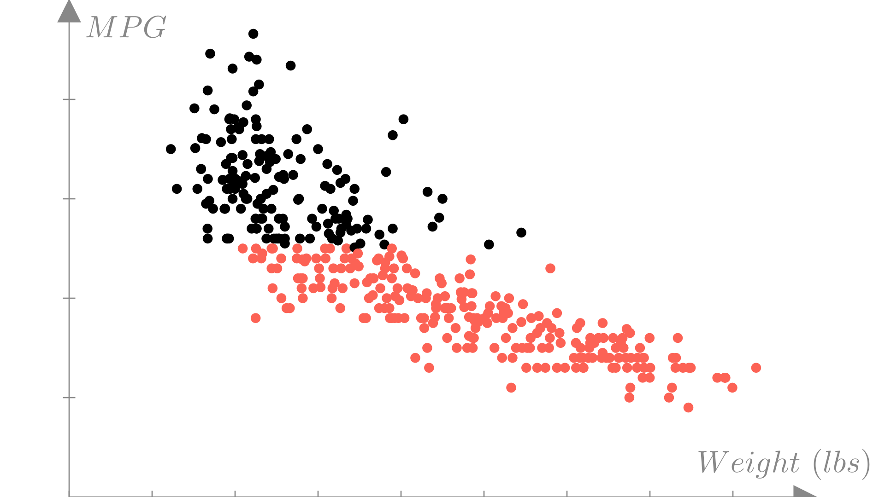
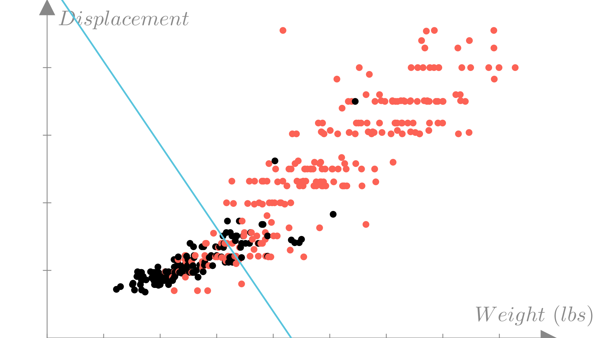
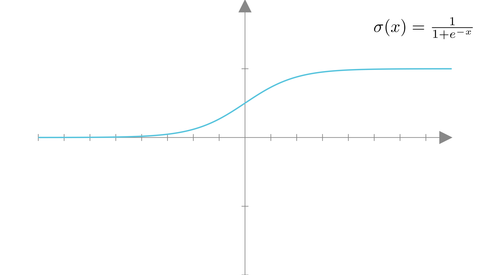

def f(x, y, z):
return x ** 2 + 3 * y + np.log(z)Lecture 3: Logistic regression
Vector Calculus Review
Partial derivatives
A function does not need to be restricted to having a single input. We can specify a function with multiple inputs as follows:
\[ f(x, y, z) = x^2 + 3xy - \log(z) \]
In code this would look like;
A partial derivative is the derivative of a multiple-input function with respect to a single input, assuming all other inputs are constant. We will explore the implications of that condition later on in this course. For now, we will simply view partial derivatives as a straightforward extension of derivatives, using the modified notation \(\frac{\partial}{\partial x}\).
More formally, we can define the partial derivative with respect to each input of a function as:
\[ \frac{\partial f}{\partial x} = \underset{\epsilon\rightarrow0}{\lim} \frac{f(x+\epsilon, y, z) - f(x,y,z)}{\epsilon}, \quad \frac{\partial f}{\partial y} = \underset{\epsilon\rightarrow0}{\lim} \frac{f(x, y+\epsilon, z) - f(x,y,z)}{\epsilon} \]
These partial derivatives tell us how the output of the function changes as we change each of the inputs individually.
Partial derivative functions
We can also specify partial derivative functions in the same way as derivative functions. We’ll use subscript notation to specify which input we are differentiating with respect to.
\[ \frac{\partial f}{\partial x} = f_x'(x, y, z) \]
We can derive partial derivative functions using the same set of derivative rules:
\[ f(x, y, z) = x^2 + 3xy - \log(z) \]
\[ f_x'(x, y, z) = 2x + 3y \]
\[ f_y'(x, y, z) = 3x \]
\[ f_z'(x, y, z) = -\frac{1}{z} \]
Functions of vectors
We can also define functions that take vectors (or matrices) as inputs.
\[ y = f(\mathbf{x}) \quad f: \mathbb{R}^n \rightarrow \mathbb{R} \]
Here \(f\) is a mapping from length \(n\) vectors to real numbers. As a concrete example we could define the function:
\[ f(\mathbf{x}) = \sum_{i=1}^n x_i^3 + 1 \]
Here’s the same function in numpy:
def f(x):
return np.sum(x ** 3) + 1
f(np.array([1, 2, 3]))37Note that functions of vectors are equivalent to multiple-input functions, but with a more compact notation!
Gradients
The gradient of a vector-input function is a vector such that each element is the partial derivative of the function with respect to the corresponding element of the input vector. We’ll use the same notation as derivatives for gradients.
\[ \frac{df}{d\mathbf{x}} = \begin{bmatrix} \frac{\partial f}{\partial x_1} \\ \frac{\partial f}{\partial x_2} \\ \frac{\partial f}{\partial x_3} \\ \vdots \end{bmatrix} \]
The gradient is a vector that tangent to the function \(f\) at the input \(\mathbf{x}\). Just as with derivatives, this means that the gradient defines a linear approximation to the function at the point \(\mathbf{x}\).
\[ f(\mathbf{x}+\mathbf{\epsilon}) \approx f(\mathbf{x}) + \frac{df}{d\mathbf{x}} \cdot \mathbf{\epsilon} \]
Where \(\mathbf{\epsilon}\) is now a small vector. Intuitively, this means that if we take a small step in any direction as defined by \(\mathbf{\epsilon}\), the gradient will approximate the change in the output of the function. Becuase we are now in more than 1 dimension, this approximation defines a plane in \(\mathbb{R}^n\).
Another extremely important property of the gradient is that it points in the direction of maximum change in the function. Meaning that if we were to take an infinitesimal step \(\mathbf{\epsilon}\) from \(\mathbf{x}\) in any direction, stepping in the gradient direction would give use the maximum value of \(f(\mathbf{x} +\mathbf{\epsilon})\). We can see this from the approximation above: \(f(\mathbf{x} +\mathbf{\epsilon})\) is maximized when \(\frac{df}{d\mathbf{x}}\) and \(\mathbf{\epsilon}\) are colinear.
We can define the gradient in this sense this more formally as:
\[ \frac{df}{d\mathbf{x}}= \underset{\gamma \rightarrow 0}{\lim}\ \underset{\|\mathbf{\epsilon}\|_2 < \gamma}{\max} \frac{f(\mathbf{x} + \mathbf{\epsilon}) - f(\mathbf{x})}{\|\mathbf{\epsilon}\|_2} \]
Gradient functions
Just as with derivatives and partial derivatives, we can define a gradient function that maps an input vector \(\mathbf{x}\) to the gradient of the function \(f\) at \(\mathbf{x}\) as:
\[ \frac{df}{d\mathbf{x}}=\nabla f(\mathbf{x}) \]
Here \(\nabla f\) is the gradient function for \(f\). If the function takes multiple vectors as input, we can specify the gradient function with respect to a particular input using subscript notation:
\[ \frac{df}{d\mathbf{x}}= \nabla_{\mathbf{x}} f(\mathbf{x}, \mathbf{y}), \quad \frac{df}{d\mathbf{y}}= \nabla_{\mathbf{y}} f(\mathbf{x}, \mathbf{y}) \]
Note that the gradient function is a mapping from \(\mathbb{R}^n\rightarrow\mathbb{R}^n\), meaning that it returns a vector with the same size as the input.
Vector notation
As we’ve seen a vector is a 1-dimensional set of numbers. For example, we can write the vector \(\mathbf{x} \in \mathbb{R}^3\) as:
\[\mathbf{x} = \begin{bmatrix} x_1 \\ x_2 \\ x_3 \end{bmatrix}\]
Recall that a vector can also be seen as either an \(n \times 1\) matrix (column vector) or a \(1 \times n\) matrix (row vector).
\[\text{Column vector: } \mathbf{x} = \begin{bmatrix} x_1 \\ x_2 \\ x_3 \end{bmatrix}, \quad \text{Row vector: } \mathbf{x} = \begin{bmatrix} x_1 & x_2 & x_3 \end{bmatrix}\]
Note that we may use the same notation for both as they refer to the same concept (a vector).
Vector notation
The difference between row and column vectors becomes relevant when we consider matrix-vector multiplication. We can write matrix-vector multiplication in two ways: \[\text{Matrix-vector: }\mathbf{A}\mathbf{x} = \mathbf{b}, \quad \text{Vector-matrix: }\mathbf{x}\mathbf{A}^T= \mathbf{b}\] In matrix-vector multiplication we treat \(\textbf{x}\) as a column vector (\(n \times 1\) matrix), while in vector-matrix multiplication we treat it as a row vector (\(n \times 1\) matrix). Transposing \(A\) for left multiplication ensures that the two forms give the same answer.
In Numpy the np.dot function works in this way. Given a matrix A and a 1-dimensional vector x, performing both operations will give the same result (another 1-dimensional vector):
A = np.array([[ 1, 2, -1],
[ 5, -3, 2],
[-2, 1, -4],
])
x = np.array([1, -2, 1])
Ax = np.dot(A, x)
xA_T = np.dot(x, A.T)
print('Ax = ', Ax)
print('xA^T = ', xA_T)Ax = [-4 13 -8]
xA^T = [-4 13 -8]Vector notation revisited
It often is much simpler to explicitly define vectors as being either row or column vectors. The common convention in machine learning is to assume that all vectors are column vectors (\(n \times 1\) matricies) and thus a row vector ( \(1\times n\) matrix) is obtained by explicit transposition:
\[\text{Column vector: } \mathbf{x} = \begin{bmatrix} x_1 \\ x_2 \\ x_3 \end{bmatrix}, \quad \text{Row vector: } \mathbf{x}^T = \begin{bmatrix} x_1 & x_2 & x_3 \end{bmatrix}\]
In this case, we would rewrite the matrix-vector and vector-matrix products we saw above as:
\[\text{Matrix-vector: }\mathbf{A}\mathbf{x} = \mathbf{b}, \quad \text{Vector-matrix: }\mathbf{x}^T\mathbf{A}^T= \mathbf{b}^T\]
In Numpy, we can make a vector into an explicit column or row vector by inserting a new dimension, either with the np.expand_dims function or with the indexing operator:
row_x = np.expand_dims(x, axis=0) # Add a new leading dimension to x
row_xarray([[ 1, -2, 1]])column_x = np.expand_dims(x, axis=1) # Add a new second dimension to x
assert np.all(column_x.T == row_x)
column_xarray([[ 1],
[-2],
[ 1]])Alternatively:
row_x = x[None, :]
column_x = x[:, None]Dot products as summations
Derivatives of summations
Nested summations
Derivatives with matrix-vector products
Logistic Regression
Binary outputs
In the last lecture we considered approximating functions of the form:
\[ y=f(\mathbf{x}), \quad \text{Input: } \mathbf{x} \in\mathbb{R}^n \longrightarrow \text{ Output: }y \in\mathbb{R} \]
In that setup our function takes in a vector and produces a real number as an output (for example a miles per gallon rating).
In many real-world problems, the output we want to model is not a continuous value, but a categorical value, meaning the function produces one a fixed set of known possible outputs. In the simplest binary case our function produces one of two possible outputs.
For example: consider the problem of labeling images as containing either cats or dogs. Conceptually we would like a function that maps images to either a cat label or a dog label:

For convenience and generality, we will typically use the set \(\{0, 1\}\) to denote the possible outputs for a binary categorical function. Therefore in general we are considering functions of the form:
\[ y=f(\mathbf{x}), \quad \text{Input: } \mathbf{x} \in\mathbb{R}^n \longrightarrow \text{ Output: }y \in \{0, 1\} \]
We can assign these outputs to correspond to our actual target labels. For instance we might say that \(0 = \textbf{"cat"}\) and \(1=\textbf{"dog"}\).
We call prediction of a categorical output classification.
Visualizing categorical functions
As a simpler example, let’s again consider the fuel efficiency example from the previous lecture. Perhaps our company has set a target fuel efficiency of 30 miles per gallon for our new model and we want to predict whether our design will meet that target. In this case our inputs will be the same as before, but our output will become a binary label:
\[ \text{Input: } \mathbf{x}_i= \begin{bmatrix} \text{Weight} \\ \text{Horsepower} \\ \text{Displacement} \\ \text{0-60mph} \end{bmatrix}, \quad \text{Output: } y_i = \begin{cases} 1: \text{Meets target } (MPG \geq 30) \\ 0: \text{Fails to meet target } (MPG < 30) \\ \end{cases} \]
We can visualize which observations meet our target efficiency by again plotting weight against MPG and using colors to distinguish observations would have label \(1\) vs. label \(0\).

With this new output definition our dataset will look like:
\[ \text{Honda Accord: } \begin{bmatrix} \text{Weight:} & \text{2500 lbs} \\ \text{Horsepower:} & \text{ 123 HP} \\ \text{Displacement:} & \text{ 2.4 L} \\ \text{0-60mph:} & \text{ 7.8 Sec} \end{bmatrix} \longrightarrow \text{1 (Meets target)} \]
\[ \text{Dodge Aspen: } \begin{bmatrix} \text{Weight:} & \text{3800 lbs} \\ \text{Horsepower:} & \text{ 155 HP} \\ \text{Displacement:} & \text{ 3.2 L} \\ \text{0-60mph:} & \text{ 6.8 Sec} \end{bmatrix} \longrightarrow \text{0 (Does not meet target)} \]
\[ \vdots \quad \vdots \]
In this case, we’ve gotten rid of the \(MPG\) output variable and replaced it with a binary output \(y_i \in \{0, 1\}\). If we plot this version of the data, we can see more directly how this classification task differs from the regression task we saw in the last lecture.

Making binary predictions
We could fit a linear regression model to our binary data, by simply treating the labels \(0\) and \(1\) as real-valued outputs. For our fuel economy example, such a model would look like this:

However, this doesn’t really address our problem. How do we interpret a prediction of \(-1\) or \(10\) or \(0.5\)? A more suitable prediction function would only output one of our two possible labels \(\{0, 1\}\). Fortunately, we can simply adapt our linear regression function in this way by defining a cutoff (typically 0), as follows:
\[ f(\mathbf{x})=\mathbf{x}^T\mathbf{w} \quad \longrightarrow \quad f(\mathbf{x})=\begin{cases} 1\ \text{ if }\ \mathbf{x}^T\mathbf{w} \geq 0 \\ 0\ \text{ if }\ \mathbf{x}^T\mathbf{w} < 0\end{cases} \]
We might also write this as:
\[ f(\mathbf{x}) = \mathbb{I}(\mathbf{x}^T\mathbf{w} \geq 0) \]
Where \(\mathbb{I}\) is an indicator function that is simply \(1\) if the boolean expression is true and \(0\) otherwise.
This gives us a prediction function that looks like step function in 1 dimension:
For our efficiency example, the binary prediction function can be written as:
\[ \text{Meets target} = f(\mathbf{x})= \]
\[ \big((\text{weight})w_1 + (\text{horsepower})w_2 + (\text{displacement})w_3 + (\text{0-60mph})w_4 + b\big) \geq 0 \]
Or in matrix notation:
\[ f(\mathbf{x})= \left( \begin{bmatrix} \text{Weight} \\ \text{Horsepower} \\ \text{Displacement} \\ \text{0-60mph} \\ 1 \end{bmatrix} \cdot \begin{bmatrix} w_1 \\ w_2\\ w_3 \\ w_4\\ b\end{bmatrix} \geq 0\right) \]
In this form we can see that the sign of each weight parameter determines whether the corresponding feature is more predictive of label \(1\) or \(0\) and to what extent. For instance, large positive weights indicate features that are very predictive of \(1\).
This has a geometric interpretation if we think of \(\mathbf{w}\) and \(\mathbf{x}\) as vectors. If the angle between \(\mathbf{w}\) and \(\mathbf{x}\) is in the range \([-\frac{\pi}{2}, \frac{\pi}{2}]\) (or \([-90^o, 90^o]\) in degrees), then the prediction will be \(1\).
Descision boundaries
We can visualize a classification dataset as a function of two variables using color to distinguish between observations with each label. In this example we’ll look at weight and engine displacement.

For a binary classification model the decision boundary is the border between regions of the input space corresponding to each prediction. For a linear classification model the decision boundary is line or plane:
\[\mathbf{x}^T\mathbf{w}=0\]
We can similarly plot the predictions made by a linear model using colors.
Model accuracy: 0.8291
Measuring error
A natural measure for error for binary classifiers is accuracy. The accuracy of a prediction function is the fraction of observations where the prediction matches the true output:
\[ \textbf{Accuracy} = \frac{1}{N} \sum_{i=1}^N \mathbb{I}\big(f(\mathbf{x}_i) = y_i\big) \]

Defining a loss function
In the last lecture we saw that we can find an optimal choice of parameters \(\mathbf{w}\) for a linear regression model by defining a measure of error or loss for our approximation on our dataset and minimizing that error as a function of \(\mathbf{w}\), either directly or with gradient descent.
We might consider using (negative) accuracy as a loss function or the same mean squared error that we used for linear regression. However, if we tried to minimize one of these losses with gradient descent, we would run into a fundamental problem: the derivative of the prediction function is always \(0\). We can see this if we
Logistic Regression
The Bernoulli distribution
\[ p(y)=\begin{cases} q\quad\ \ \ \ \ \ \ \text{if }\ y=1\\ 1-q\quad \text{if }\ y=0\\ \end{cases}\quad q\in[0,1],\ y\in\{0, 1\} \]
or
\[ p(y) = q^y(1-q)^{1-y} \]
\[ \log p(y) = y\log q + (1-y)\log(1-q) \]
A probabilistic model for binary classification
\[ y_i \sim \mathcal{N}(\mathbf{x}^T\mathbf{w},\ \sigma^2) \]
\[ \mathbf{x}^T\mathbf{w}\notin [0, 1] \quad \longrightarrow \quad y_i \sim \mathbf{Bernoulli}(\mathbf{ q=? })\quad \]
\[ \textbf{Need }\ f(x):\ \mathbb{R} \longrightarrow [0,1] \]
\[ \textbf{Input: } x \in \mathbb{R} \longrightarrow \textbf{Output: } y \in [0,1] \]
Sigmoid function
\[ \sigma(x) = \frac{1}{1+e^{-x}} \]

\[ \frac{d}{dx}\sigma(x) = \sigma(x)\big(1-\sigma(x)\big) \]
\[ \sigma(0) = 0.5 \]
\[ 1-\sigma(x) = \sigma(-x) \]
A probabilistic model for binary classification
\[ y_i \sim \mathbf{Bernoulli}\big(\mathbf{ \sigma(\mathbf{x}_i^T\mathbf{w} })\big) \]
\[ p(y_i = 1) = \sigma(\mathbf{x}_i^T\mathbf{w}), \quad p(y_i=0)=1-\sigma(\mathbf{x}_i^T\mathbf{w})=\sigma(-\mathbf{x}_i^T\mathbf{w}) \]

\[ p(y_i=1)\geq 0.5 \quad \longrightarrow \quad \mathbf{x}^T\mathbf{w}\geq 0 \]
Maximum likelihood estimation
(conditional probability) of all of the outputs in our dataset:
\[ \mathbf{w}^* = \underset{\mathbf{w}}{\text{argmax}} \ p(\mathbf{y} \mid \mathbf{X}, \mathbf{w}) =\underset{\mathbf{w}}{\text{argmax}} \ p(y_1,...,y_N \mid \mathbf{x}_1, ...,\mathbf{x}_N, \mathbf{w}) \]
Generally our model also assumes conditional independence across observations so:
\[ p(y_1,...,y_N \mid \mathbf{x}_1, ...,\mathbf{x}_N, \mathbf{w}) = \prod_{i=1}^N p(y_i\mid \mathbf{x}_i, \mathbf{w}) \]
For convenience, it is typical to frame the optimal value in terms of the negative log-likelihood rather than the likelihood, but the two are equivalent.
\[ \underset{\mathbf{w}}{\text{argmax}} \prod_{i=1}^N p(y_i\mid \mathbf{x}_i, \mathbf{w}) = \underset{\mathbf{w}}{\text{argmin}} - \sum_{i=1}^N \log p(y_i \mid \mathbf{x}_i, \mathbf{w}) = \textbf{NLL}(\mathbf{w}, \mathbf{X}, \mathbf{y}) \]
We see that the negative log-likelihood is a natural loss function to optimize to find \(\mathbf{w}^*\).
\[ \textbf{Loss}(\mathbf{w}) =\textbf{NLL}(\mathbf{w}, \mathbf{X}, \mathbf{y})=- \sum_{i=1}^N \log p(y_i \mid \mathbf{x}_i, \mathbf{w}) \]
We can w
\[ \mathbf{NLL}(\mathbf{w}, \mathbf{X}, \mathbf{y}) = -\sum_{i=1}^N y_i\log \sigma(\mathbf{x}^T\mathbf{w}) + (1-y_i)\log(1-\sigma(\mathbf{x}^T\mathbf{w})) \]
\[ =-\sum_{i=1}^N y_i\log \sigma(\mathbf{x}^T\mathbf{w}) + (1-y_i)\log \sigma(-\mathbf{x}^T\mathbf{w}) \]
\[ \textbf{Ideally: }\ p(y_i\mid \mathbf{x}_i, \mathbf{w})=1,\ \forall (\mathbf{x}_i, y_i)\in \mathcal{D} \]
\[ \mathbf{NLL}(\mathbf{w}, \mathbf{X}, \mathbf{y}) = -\mathbf{y}^T\log \sigma(\mathbf{X}\mathbf{w}) \]
Comparing loss functions
Loss for \(y=0\) as a function of \(z=\mathbf{x}^T\mathbf{w}\)
\[ \textbf{Let: }\ z=\mathbf{x}^T\mathbf{w} \]

Multi-class classification
Multi-class prediction functions
We will typically use a set of integers \(\{0,1, 2,...,C\}\) to denote the possible outputs for a general categorical function. Therefore in general we are considering functions of the form:
\[ y=f(\mathbf{x}), \quad \text{Input: } \mathbf{x} \in\mathbb{R}^n \longrightarrow \text{ Output: }y \in \{0, 1, 2, ...,C\} \]
It’s important to note that we are not assuming that the ordering of labels is meaningful For instance if we’re classifying images of animals we might set the labels such that:
\[ \textbf{0: Cat},\quad \textbf{1: Dog},\quad \textbf{2: Mouse} \]
But
\[ \textbf{0: Dog},\quad \textbf{1: Mouse},\quad \textbf{2: Cat} \]
\[ f(\mathbf{x}) = \underset{c\in\{0...C\}}{\text{argmax}}\ \mathbf{x}^T\mathbf{w}_c \]
Alternatively:
\[ f(\mathbf{x}) = \underset{c\in\{0...C\}}{\text{argmax}}\ (\mathbf{x}^T\mathbf{W})_c, \quad \mathbf{W} \in \mathbb{R}^{d\times C} \]
if \(C=2\):
\[ f(\mathbf{x}) = \underset{c\in\{0,1\}}{\text{argmax}}\ (\mathbf{x}^T\mathbf{W})_c = \mathbb{I}(\mathbf{x}^T\mathbf{w}_1 - \mathbf{x}^T\mathbf{w}_0 \geq 0) \]
\[ =\mathbb{I}(\mathbf{x}^T(\mathbf{w}_1 - \mathbf{w}_0) \geq 0) \quad \longrightarrow \quad \mathbb{I}(\mathbf{x}^T\mathbf{w} \geq 0), \quad \mathbf{w}=\mathbf{w}_1-\mathbf{w}_0 \]
We call prediction of a categorical output classification.
Categorical distribution
\[ p(y=c) = q_c, \quad y\in \{1...C\} \]
\[ \mathbf{q} \in \mathbb{R}^C\quad q_c \geq 0\ \forall c\in \{1...C\}\quad \sum_{c=1}^C q_c=1 \]
\[ p(y)=\prod q_c^{\mathbb{I}(y=c)} \]
\[ \log p(y) = \sum_{c=1}^C \mathbb{I}(y=c)\log q_c = \log q_y \]
A probabilistic model for multi-class classification
\[ y_i\sim \mathbf{Categorical}(\mathbf{q}=?) \]
\[ \mathbf{q}=\mathbf{x}^T\mathbf{W}? \]
\[ \mathbf{x}^T\mathbf{W}\in \mathbb{R}^C,\quad q_c \ngeq 0\ \forall c\in \{1...C\}, \quad \sum_{c=1}^C q_c\neq1 \]
\[ \textbf{Need }\ f(\mathbf{x}):\ \mathbb{R}^C \longrightarrow [0,\infty)^C,\ \sum_{i=1}^Cf(\mathbf{x})_c = 1 \]
Softmax function
\[ \text{softmax}(\mathbf{x})_c = \frac{e^{x_c}}{\sum_{j=1}^Ce^{x_j}} \]
if \(C=2\)
A probabilistic model for multi-class classification
\[ y_i\sim \mathbf{Categorical}\big(\text{softmax}(\mathbf{x}^T\mathbf{W})\big) \]
\[ p(y_i=c) = \text{softmax}(\mathbf{x}^T\mathbf{W})_c=\frac{e^{\mathbf{x}^T\mathbf{w}_c}}{\sum_{j=1}^Ce^{\mathbf{x}^T\mathbf{w}_j}} \]
Maximum likelihood estimation
\[ \textbf{Loss}(\mathbf{W}) =\textbf{NLL}(\mathbf{W}, \mathbf{X}, \mathbf{y})=- \sum_{i=1}^N \log p(y_i \mid \mathbf{x}_i, \mathbf{W}) \]
\[ = \sum_{i=1}^N \log\ \text{softmax}(\mathbf{x}_i^T\mathbf{W})_{y_i} = \sum_{i=1}^N \log \frac{e^{\mathbf{x}_i^T\mathbf{w}_{y_i}}}{\sum_{j=1}^Ce^{\mathbf{x}_i^T\mathbf{w}_{j}}} \]
\[ =\sum_{i=1}^N \bigg(\mathbf{x}_i^T\mathbf{w}_{y_i}- \log\sum_{j=1}^Ce^{\mathbf{x}_i^T\mathbf{w}_{j}}\bigg) \]
Evaluating models
Training and test datasets
In machine learning we are typically less interested in how our model predicts the data we’ve already seen than we are in how well it makes predictions for new data. One way to estimate how well our model our model will generalize to new data is to hold out data while fitting our model. To do this we will split our dataset into two smaller datasets: a training dataset that we will use to fit our model, and a test or held-out dataset that we will only use to evaluate our model. By computing the loss on this test dataset, we can get a sense of how well our model will make prediction for new data.
\[\mathcal{D} = \{ (\mathbf{x}_1, y_1),\ (\mathbf{x}_2, y_2),\ ... \,(\mathbf{x}_N, y_N) \}\quad \longrightarrow \quad \]
\[ \mathcal{D}_{train} = \{ (\mathbf{x}_1, y_1),\ (\mathbf{x}_2, y_2),\ ... \,(\mathbf{x}_{Ntrain}, y_{Ntrain}) \},\ \mathcal{D}_{test} = \{ (\mathbf{x}_1, y_1),\ (\mathbf{x}_2, y_2),\ ... \,(\mathbf{x}_{Ntest}, y_{Ntest}) \} \]